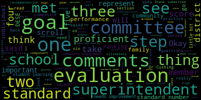
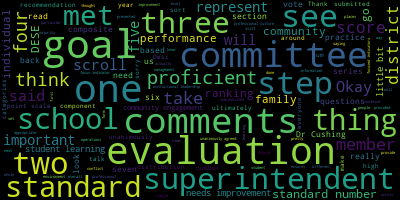

total time: 3.24 minutes
total words: 447

total time: 17.06 minutes
total words: 2569

{kind=link}
total time: 1.35 minutes
total words: 224
[Clerk]: Good evening, everybody.
[Lungo-Koehn]: We're recording. We have a committee of the whole meeting on Monday, June 5th, 2023, 4.30 to 5.30 p.m. here in the Howard Alden Memorial Chambers, Medford City Hall, as well as via Zoom participation, Zoom participation. The meeting can be viewed through Medford Community Media, Comcast Channel 15, and Verizon 45 at 430. Participants can log or call in by using the following link or call-in number. One of the phone numbers is 1305-224-1968. You can enter meeting ID 939-7847-1882 when prompted. Questions or comments can be submitted during the meeting by emailing MedfordSC at medford.k12.ma.us. Those submitting questions or comments must include the following information, your first and last name, your Medford street address, your question or comment. At memorandum, as approved by the committee of February 1st, 2023, the evaluation subcommittee will meet to review and develop the process for the 2023-2022 superintendent evaluation. And on this agenda is approved by the Evaluation Subcommittee on Thursday, February 16th, 2023. The Committee of the Whole will meet to review and discuss composite evaluations. Who wants to start us off? Member Graham, Member Hays, attendance from Member Ruseau first while you decide amongst the two.
[SPEAKER_00]: Member Graham. Member Hays.
[Clerk]: Here.
[SPEAKER_00]: Member Kreatz. Member McLaughlin.
[Clerk]: Here. And member... Her audio is connecting. Member McLaughlin, are you on?
[SPEAKER_00]: Come back.
[Lungo-Koehn]: I am, here. Thank you.
[SPEAKER_00]: Member Mustone.
[Lungo-Koehn]: We have seven in the affirmative.
[SPEAKER_00]: Member Mustone.
[Lungo-Koehn]: Yes.
[SPEAKER_00]: Member Rizzo, yes. Mayor Longo, okay.
[Lungo-Koehn]: Yes, seven the affirmative. Seven are present, none absent. We have Member McLaughlin on Zoom for now. Is that working? Is that working? Member, I'll turn it over to Member Graham and then Member Hays.
[Graham]: Thank you. We met over the course of several meetings and most recently on Thursday night to compile the superintendent's composite evaluation. So as a reminder to anyone who might be listening, we as the school committee are collectively in charge of the superintendent's evaluation. And that means we must coalesce by a majority vote on a single evaluation. So the way that we do that here in Medford, and I think in general, is that all members of the committee spend some time thinking about the same exact evaluation. We all do our own individual evaluation and then we roll up and consolidate each of the seven individual evaluations into one cohesive evaluation. So I think the important thing to note is that the individual evaluations certainly are available to the superintendent, but they are relatively meaningless in the big scheme of what evaluation it is that goes to Desi. So what we have done is work to take seven and become one, and we'll talk about that as we go through tonight. I think the other important thing to note is that as we do that, what we have done is try to take a pretty careful and planned approach to representing a bunch of differing views on the various components of the evaluation, as well as represent and be clear and transparent about how those individual scores affected the ultimate recommendation. So, as we, as we progress through the form, it'll look the same as what you all saw when you did your individual evaluations. We did, Sharon did, member Hays did go in and put the distribution of scores across each of the rankings so you can see sort of where the committee was at in total. And then the comments are left somewhat intact so we we opted to represent the comments made by the committee so that we could represent a full picture because we didn't all agree on everything all the time and we felt like the comments were substantive and thoughtful and we wanted to make sure that they were provided to the superintendent. And then ultimately at the end of this, we'll need to take a vote. And this is the committee of the whole, right? So we will need to take a vote on committee of the whole, and then we will need to take a vote next week in our regular school committee meeting to approve the evaluation. And then those final composite scores get submitted to DESE. The comments and all of that really don't go to DESE. It's really just that composite score. But the conversation that we'll have tonight is really about the superintendent's performance over the course of the school year. from our perspective and from our purview. And the goal is for us to all agree on a single evaluation that represents the view of quote, the committee. Does that help everyone set the stage and the frame? Yes. Okay. Do we have a copy to pull up that we could all take a look at?
[Clerk]: Dr. Cushing is going to do that in a minute. Okay.
[Graham]: What you can see here is Desi's suggested template, and we each filled out one that looks exactly like this. But what we have done here is make a consolidated one that will represent ultimately the review of the committee. And so we'll just go step-by-step through this form, and I'll stop at the end of each section and we can talk, discuss, make updates, field questions, and that kind of thing as we go. But in step one, we are talking about assessment towards goals. So as a reminder, the superintendent presented a series of goals to us back in the fall. We unanimously approved them. There's three categories, professional practice goal, a student learning goal, and a district improvement goal. So for each of those goals, DESE requires that we, or recommends that we evaluate the superintendent on a five point scale. So from did not meet to exceeded. And what you can see here across each of the lines is what the distribution of rankings was across the seven members. So you can see each one adds up to seven, And for example, in the professional practice goal, one person thought significant progress had been made, five thought that the superintendent had met her goal, and one thought that she had exceeded the goal. In this particular category, step one, which is the particular goals that we approved unanimously, it's the recommendation of the evaluation subcommittee that MET be submitted for each of these three goals. And what you can see is that the majority of folks did suggest that MET was the right qualifier for them. And then I think in places where there was some variability, we still recommend that MET be the school committee ranking for these three goals. based on the distribution of the ones that were not strictly met. Are there any questions about the items in step one?
[Lungo-Koehn]: Member Rossell?
[SPEAKER_00]: I just for anybody watching I just think it's important to highlight that there's goals and then standards and that they're different things and Jesse has been changing that over the years. And so, for instance, there are five categories of performance on the top section and there's only four in the bottom. So maybe someday, they'll. they'll bring it all together so that it's not weird like that. But I just think that's an important distinction is that they're different things. So.
[Graham]: Thank you. Any other questions or comments about or objections on the first component? Step one? Okay, if you can scroll down a little bit, Dr. Cushing, that's perfect. So step two, we'll talk about this at the composite level, and then we'll get into a little bit of detail, particularly as we look at the comments. So, essentially, this is what this is the level of information that gets provided to Desi about the superintendent's evaluation. So, as member Rousseau was saying, there are goals and there are standards. They are different. Goals are something that are established uniquely here in Medford. Standards are a series of attributes that Desi has established are important for superintendents to to have and to exhibit as they complete their role on a year to year basis. So those standards fall into four categories. So standard number one is instructional leadership, standard number two is management and operations, standard number three is family and community engagement, and then standard four is professional culture. So, the scale changes here a little bit so we had a five point scale and step one, and as member so said maybe someday we'll have the same kind of scale and in both places but in this in this section and then really for the rest of the review. We, we will see a four point scale unsatisfactory needs improvement proficient and exemplary. When we get to the comments, what will be important to remember as we talk about comments is that members are required to provide comments if they provide a ranking other than proficient, but if they are evaluating the superintendent as proficient, there is no requirement for comments. So in this case, what you can see is under instructional leadership, we unanimously agreed that proficient was the appropriate rank, the appropriate evaluation decision. Under management and operations, we had two members who said needs improvements, five who said proficient. Under family and community engagement, we had one that said needs improvement and six that said proficient. And then under standard four, professional culture, we had one that said needs improvement and six that said proficient. So it was the recommendation of the evaluation subcommittee that proficient be submitted to DESE on behalf of each of these four standards. Are there any questions about step two? No. Okay. And then in step three, we roll all of those things up together into one single number. We're still on a four-point scale here. but the overall summative performance based on the rankings and the evaluations in step one and step two, all seven of us unanimously agreed that Proficient was the appropriate aggregated summative performance recommendation. So in step three, we would plan to submit Proficient to the, to DESE on behalf of the committee if we take this ultimately to a majority vote. Questions about step three. Okay. In step four, there's some. comments that pertain to the overall evaluation. And so these comments, as you can see, came from various members and the committee had some conversation around, should we be trying to compress these into one narrative? Was it important for them to sort of stand alone? And we, as a group, unanimously agreed that it was important for them to stand alone. They do represent slightly, you know, different points of view and different takes on the same thing and I think that's the thing about any evaluation is that as objective as you try to be, there's still a very subjective part to somebody's performance evaluation and I think all of these comments, you know, in in the big scheme of things are intended to both compliment the superintendent on the things that she did well and also point out the places where we would like to see continued growth on the part of the superintendent as it relates to certain things. So, I think I'll give you all a minute to read through this provided you can all see the screen. Can everyone see the screen? Okay. So, if everyone just wants to take a minute and read through, I think that probably is a good way to move through what are some media comments here.
[Clerk]: Has everybody had a chance to read or should I wait another minute? Okay. Um any
[Graham]: So if you scroll down, what happens next in this form is And I think as you fill it out for practical matters, you actually fill it out sort of in the reverse. Actually, we've covered all of this section, so this is just a summary of exactly what we talked about, the three district goals at the top here that you saw up above. And it just provides a little bit more information about what those goals were, which is really a very short summary of an otherwise pretty in-depth set of information about what those goals were. The student learning goal was early literacy. The professional practice goal was leading now sessions with MASS on race, equity, diversity, and inclusion. They're called ready sessions. District improvement goal number one was maintaining a learning environment built upon the pillars of safety, equity, and consistency. District goal number two is creating a culture that values consistent communication. And district improvement goal number three was creating structures that promote healthy transportation to school. And so you can see here, again, the distribution all sort of coalesces around MET. So, sorry, we're back to five categories here, just to make things very clear. So we're back to five categories from did not meet to exceed, but the committee did coalesce again around that MET score for these schools.
[SPEAKER_01]: Can I make one comment about this section that I noticed earlier? Under district improvement goal number two, there are only six ratings listed. I think an early version, one person had not sent me their rating for that. So I will correct that in the final draft. This is just the first draft. three significant progress and one met under, I mean, and four met, three significant progress, four met under district improvement goal number two.
[Graham]: Thank you. Dr. Cushing, can you scroll down? Okay, so this next section is where we go back to our standards. And in each standard, we have a series of options that are presented to us, and they would, I think, represent what we would consider to be the whole job under this particular standard. Um but what the what DESE encourages school committees to do is to pick one or two focused indicators um and base the entire evaluation of this component around those one or two or maybe possibly three um focused indicators. So the our focused indicators are highlighted in yellow. They are the only things that this committee um did evaluate the superintendent based on, so her composite score for instructional leadership is based on two things. It's 1B, which is ensures that practices in all settings reflect high expectations regarding content and quality of effort and work, engage all students, and are personalized to accommodate diverse learning styles, needs, interests, and levels of readiness. I-3, sorry, I-E, is data-informed decision-making, uses multiple sources of evidence, including related to student learning, including state, district, and school assessment results and growth data to inform school and district goals and improve organizational performance, educator effectiveness, and student learning. So those were the two goals that we met and unanimously agreed were the things that most closely aligned to the goals that we had set out for the year. And you can see the scores there pretty unanimously proficient is the the ranking and evaluation there. There are some comments here that are specific to instructional leadership. So there are three comments here, or actually, I'm sorry, two comments here. So I'll give you all a minute to read those.
[Clerk]: Is everybody okay if I move forward?
[Graham]: If you scroll down standard number two is management and operations. We selected one focus indicator here it was environment, which is develops and executes effective plans procedures routines and operational systems to address the full range of safety, health, emotional and social needs, and the committee. ultimately rated this entire section five people saying met two people saying needs improvement. And then if you can scroll down a little bit more Dr. Cushing, there's a series of comments there that I will pause for you all to read.
[SPEAKER_00]: Member Ruseau, could we scroll up actually? I'm confused how somebody would say on the only focus indicator that somebody needs improvement and then say that they were proficient. There's only one thing you can grade the person on. It's like if you had one class and you got a B, your GPA is a B. So I'm confused how somebody, I mean, the outcome is the same, but I don't understand how you can, you have one thing you're measuring, and then when you average your one thing you're measuring, you get a better score.
[McLaughlin]: Mayor?
[Lungo-Koehn]: Member McLaughlin?
[RhUNhYl62Oo_SPEAKER_05]: Thank you.
[McLaughlin]: Thank you. I think that might be better understood if you read the different ratings for the needs improvement versus proficient back up at the top. And so there's a little bit of
[Clerk]: abstract or needs improvement, needs improvement.
[McLaughlin]: So if you can go back up to the top and look at what those needs improvement and proficient, actually how they're defined.
[Clerk]: Yes, right there. So needs improvement. May I, Max?
[McLaughlin]: Yes, Member McLaughlin. Performance on a standard or overall is below the requirements of a standard or overall, but is not considered to be unsatisfactory at the time improvement is necessary and expected. Proficient practice is understood to be fully satisfactory. So I guess, yeah, I can see where the conflict is there. I think that, yeah, I guess, yeah, one has to be needs improvement. Proficient has to be actually fully satisfactory. So it does say fully. There is not ambiguity. or proficient. So yeah. So we'll have to look at the ratings. So thank you for pointing that out. We'll review that between now and the next meeting before it's reviewed to the committee. And I might also just add, I wanted to, if I could Mayor, say thank you to the subcommittee, which was member Graham, member Hays and myself for the multiple meetings that this took to put this together. So thank you all.
[Graham]: Thank you. So we can take a look at that. And before the final is presented just to clean up that conflict, but good catch. I did not notice that the other day when we were going through this. So Dr. Cushing, can you scroll down and let everyone read the comments there?
[Clerk]: Thanks. Are there any questions about this section?
[SPEAKER_00]: Mayor?
[Clerk]: Member Ruseau?
[SPEAKER_00]: Yes, thank you. First of all, I'd like to point out that the thing we were just talking about about the discrepancy is actually my review. Because there are two different places where you provide your summary of the count. And in the bottom one, which we were just looking at, I actually had said needs improvement, but at the very, very top of the document is actually another place where you're yet again transcribe the same information so that error was mine so I wanted to own that and we now know how to fix that because it's not a mystery. I would blame the people that required into the same data multiple times. I would like to. make a I don't know if we need a motion, but my comments that were so this is a PDF. And unfortunately, this document, I swear, sometimes I feel like nobody uses a document before they send it out to 351 communities. But when you click into the document to put comments and then click out of the box, anything too big just disappears off the bottom of the page. And you can't even see it. And it's, it's a not a well-designed piece of, not a well-designed tool. So my comments have been compressed to try and fit them into here, but I wanted to just have a request that my original comments that I sent actually be replacing, that they replace this. And my comments, for the most part, are the same. There was some compression of like the structure of my comments. there's nothing new, but I just felt like this doesn't flow as what I actually wrote for comments the way I originally did. And I certainly understand the need to figure out how to fit it into this PDF. So that's the only change I'd like to make to this. Unless there's an objection.
[Graham]: Is there a motion to amend?
[SPEAKER_00]: Motion to amend. Second.
[Lungo-Koehn]: Motion to amend by Member Ruseau, seconded by Member McLaughlin. All those in favor?
[SPEAKER_01]: Aye.
[Lungo-Koehn]: All those opposed? Ayes have it.
[SPEAKER_01]: Member Hays? Yeah, I just wanted to comment. I wanted to thank Member Ruseau for kind of giving me a heads up about this. And I'm working on getting a second page. What happens, or at least, it worked differently apparently in different browsers. The font size got too small with yours. It fit, but it was too small to be legible. So I'm working on making a second page to have your comments on. So thank you for that.
[Lungo-Koehn]: Thank you member Hays. Thank you for doing this and to the committee as well.
[Graham]: Okay. On to standard number three, which is family and community engagement. As you can see, we elected for three focus indicators under family and community engagement. So the first is actively ensures that all families are welcome members of the classroom and school community and can contribute to the effectiveness of the classroom school district and community. The second is continuously collaborates with families and community stakeholders to support student learning and development at home school and in the community. And then the third is engages in regular two-way culturally proficient communication with family and community stakeholders about student learning and performance. So again, here, the committee is recommending, as we talked about in step two earlier, that MET is the metric that is submitted for the standard number three family and community engagement based on these scores. And then Dr. Cushing, if you can scroll down just a little bit so that people can see those comments, that would be great.
[Clerk]: I'll give you a minute to read those. Does anybody have any questions or need more time?
[Graham]: Okay, let's move on to standard for professional culture commitment to high standards was the first focus indicator that we chose. fosters a shared commitment to high standards of service teaching and learning with high expectations and achievements for all. The committee, the committee unanimously said that the second focus indicator cultural proficiency was also important to us to share ensures that policies and practices enable staff members and students to interact effectively in a culturally diverse environment in which students backgrounds identities strengths and challenges are respected. And then the third component was managing conflict, employee strategies for responding to disagreement and dissent, constructively resolving conflict and building consensus throughout the district or school community. And again here, the consensus among the evaluation subcommittee and the committee at large was that the overall rating here was a six. six, four, sorry, six, four met and one, four needs improvement and you can see the individual standards throughout and what those scores are. Doctor Cushing, if you could scroll down, there's a series of comments about about this standard number four professional culture as well.
[Clerk]: It is tiny. This one, this one got pretty Are there any questions about the comments here? Okay, that is the entire review.
[Graham]: So I think I will turn it back over to the mayor. I don't know if there's additional discussion or a motion.
[Lungo-Koehn]: We've all reviewed the full report. Now it's time for either discussion or a motion for approval of acceptance. We already motioned to amend per member Rousseau. So we'll take a motion on the floor unless there's questions.
[63m6ohF-DtU_SPEAKER_07]: Member Kreatz? Yes, I just wanted to thank the subcommittee for all the hard work on putting this together. I know how much time you spent on it, and I appreciate I had many text messages going back and forth to Sharon, because I was working with a different browser, so I understand, and I figured out a way to, like, cut, I guess, copy and paste my comments in and then print it. So I didn't, you know, I couldn't save it, but that I figured it out. It was like, okay, let me do that. And then I brought it in here. So I appreciate it. And I know she was there for me. I sent her many, many messages. Thank you, Sharon. And thank you all for all your hard work. I know how many meetings you had and appreciate it. I think this time around, it was much smoother and I think it went very well. And it was, we all got to participate and, you know, it was the instructions you did were excellent and easy to follow. Thank you all. Thank you.
[Lungo-Koehn]: Thank you. Yeah, I want to reiterate member, member Kreatz, um, you had six or seven meetings just to get to the place we're at today and tonight proved that it was well worth it. So thanks for all your efforts. They're emotional.
[McLaughlin]: Thank you. I just wanted to motion to approve.
[Lungo-Koehn]: Motion to approve by member McLaughlin, seconded by member Hays. All those in favor? Aye. All those opposed? Motion passes. I know that we all received an envelope, so we need a few minutes to read before our next meeting. So if there's a motion to adjourn to allow us to recess. Motion to adjourn by Member McLaughlin, seconded by Member Mustone. All those in favor? Aye. All those opposed? We have about 20 minutes to do some review and before our next meeting.
[Clerk]: Thank you.
|
total time: 3.24 minutes total words: 447 |
total time: 17.06 minutes total words: 2569  |
total time: 1.35 minutes total words: 224 |
|
{kind=link}